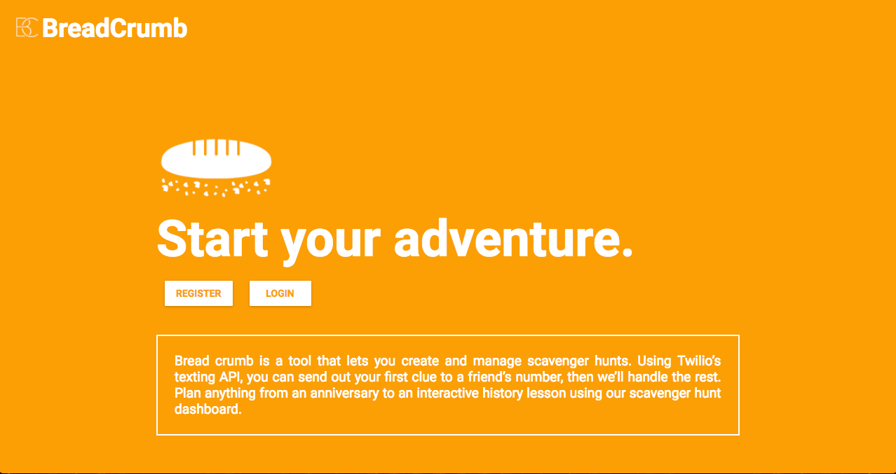
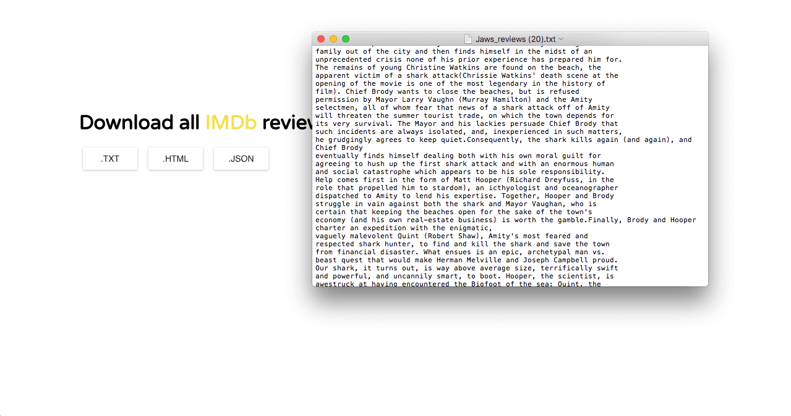
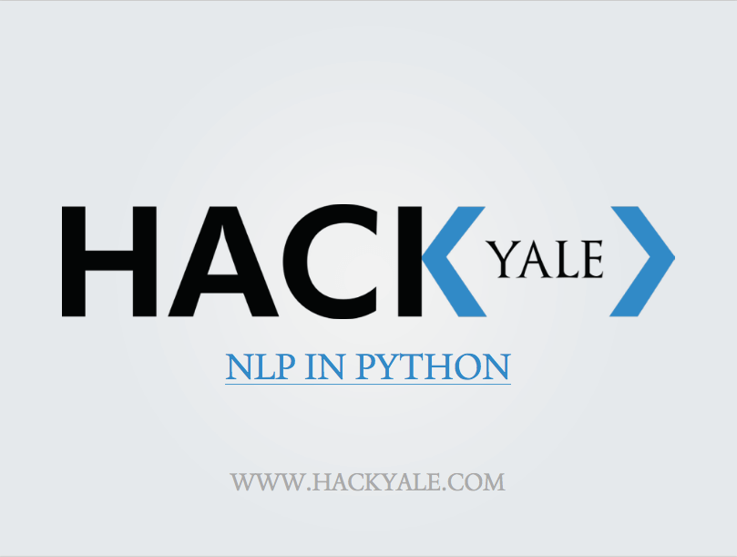

Date Idea Generator
Randomizer for date locations using Yelp's Fusion API
http://dateideagenerator.comHello, I'm a software developer based in Salt Lake City, Utah.
Until recently, I was finishing up my B.A. in Computational Linguistics at Yale University.
Now, I'm making web development more accessible as a mentor at DevMountain.
Randomizer for date locations using Yelp's Fusion API
http://dateideagenerator.comSMS-based scavenger hunts
http://breadcrumbproject.com IMDb review web scraper that compiles all reviews for a movie as .html or .txt
Not currently hosted
Student-run courses on web development and other topics.
 View Case Study View SlidesLearning web development can be intimidating at first. As a mentor, I've had the opportunity to help new and experienced programmers learn the PERN (PostgreSQL, Express, React, Node) stack.
I was lucky to work on a great team to create student-run courses on topics not covered by Yale's CS department. Together, we connected students with job opportunites and provided feedback to companies, including Facebook. I personally designed our course on Python's Natural Language Toolkit.
View SlidesBefore I got into software development, I was working towards a career in journalism. During this internship, I set up a network of YouTube channels while teaching myself video editing and SEO best practices. The channel now has ~275,000 subscribers and 100,000,000 channel views.
YouTube ChannelI spent most of high school acting, writing, and managing this student-written theatre project's social media pages (Facebook, Tumblr, Kickstarter). In 2013, the project's director and I wrote a proposal which resulted in a PBS-WEDU documentary that was screened at 40+ film festivals and awarded a regional Emmy Award.
Kickstarter Page2014 - 2018
New Haven, CT
B.A. in Computational Linguistics
Senior Thesis SlidesSummer 2015
Prague, Czech Republic
Certificate in Film Production
I love to code and I love to read. Here are some of the articles I've enjoyed recently.
Description goes here
Motivation goes here
Planning goes here
Outcomes go here
Live SitePeanut Gallery is a web scraper I created to compile all the IMDb reviews for a given movie title. It allows users to download reviews as a .txt or .html file.
I’m fascinated with how natural language corpora are created… I wanted to take a stab at creating my own.
Planning details go here
Reworked the back-end code for my senior thesis. I also rewrote the scraper using Clojure
When I was on the HackYale team, we taught courses on web development, C++, graphic design, and android development. As an instructor, I decided to develop an accessible, three-week course on Natural Language Processing in Python.
Yale’s Computer Science department focuses on fundamental topics in C and LISP. When HackYale was founded in 2011, there was a desire on campus for courses on additional topics outside the scope of the major. Specifically, there was a strong need for courses in web development and high-level programming languages. In fact, our Introduction to Web Development course regularly had 200+ applicants for ~30 spots.
I wanted the course to be accessible to students without CS backgrounds. The hardest part was to describe NLP concepts in a straightforward way. I used the following resources when planning out my curriculum:
I taught the class to a group of CS students, an MBA from the Yale School of Management, and a PhD student in Astrophysics who wanted to retool as a Data Scientist. Over the course of three weeks, we covered corpus manipulation and analysis, n-gram language models, naive bayes text classification, and concluded by categorizing a dataset of news articles using a model we built with the Reuters Text Classification Corpus.
View Slides